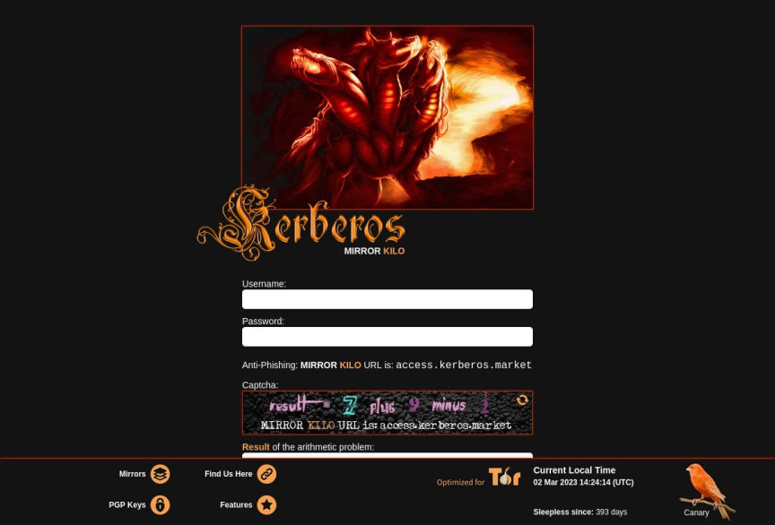
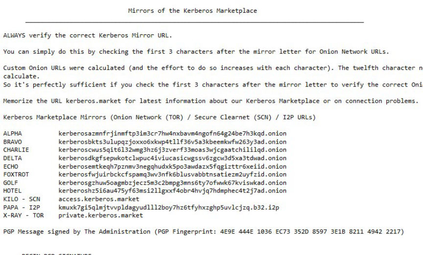
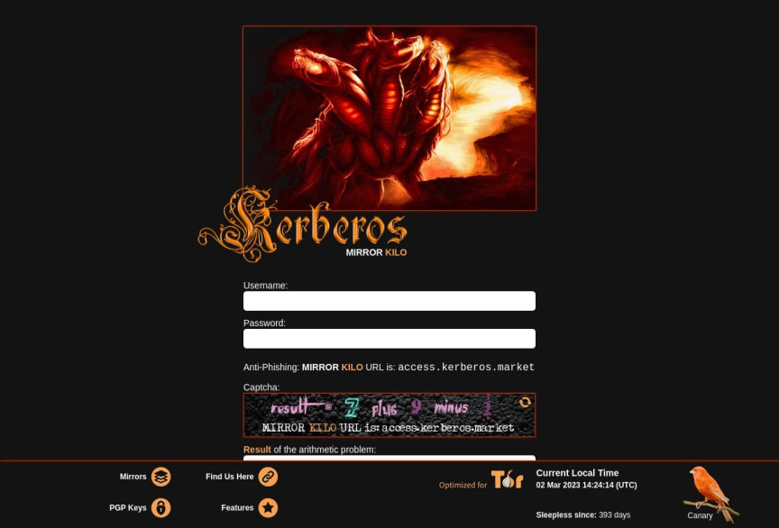
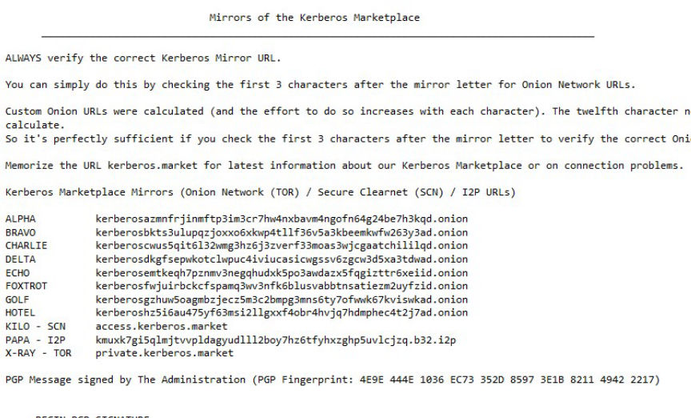

Kerberos Market Linked to Notorious Phisher DarknetOne
Kerberos, a young darknet marketplace, was discovered to be linked to a notorious phishing site. And hence has been delisted from our index.

Your correspondent discovered that the official PGP-signed mirror list includes eight onion links. In which, links Alpha~Delta are on major darknet indexes including Darknetlive. The list of links is displayed in the screenshot below, with the original signed PGP message here, with a backup of the site's pgp key here.

What we came to discover concerns links Echo~Hotel, the exact four links are found on darknetone (snapshot). Darknetone is a known phishing site targeting darknet users, they profit by conducting man-in-the-middle attacks with the links distributed through their website, swapping out deposit addresses and stealing user credentials. We have taken a snapshot of their entire onion link section, with all of the markets with phishing links, to name a few: Tor2Door, ASAP, Abacus, Bohemia, Archetyp, Incognito, Vice City and many others. The interesting finding here is that not only is Kerberos the only market that does not have its links swapped out, but also the only market that has four links dedicated to be listed on darknetone.
In addition to colluding with a known phisher, Kerberos threatened the security of it's users by setting up a clearnet proxy (note: not rotational mirror distributor) that is protected and proxied by Cloudflare. Which also means, in layman terms, Cloudflare (a company under U.S. jurisdiction) can monitor and log every single thing you do on the market with the link. This is a major opsec breach, and is definitely a dangerous move that might result in arrests of buyers and vendors.
Taking into account all of the above findings, DarknetLive has decided to remove Kerberos from our index.
Edit: According to market admin Lucifer, Kerberos has removed all darknetone links, though not the exclusive mirrors. However, they have also removed the clearnet proxy, which is the main reason of the delisting. We've resumed listing of the market accordingly and will be closely monitoring the situation.
I'd like to make a point here that TLS encryption is not encrypted end-to-end from the client directly to the server itself if you are proxying through cloudflare. For those who do not use cloudflare, data is decrypted and then re-encrypted at cloudflare servers. It is fine if you use it as link generators or announcement posts. However, in the case of directly proxying market traffic, you are exposing user information at risk. Even if you do not use cloudflare, the seizure of clearnet proxies by law enforcement or a malicious third party will post a threat to LE honeypots and MITM attacks. Any onion service found using such proxying mechanism will be automatically delisted.

Your correspondent discovered that the official PGP-signed mirror list includes eight onion links. In which, links Alpha~Delta are on major darknet indexes including Darknetlive. The list of links is displayed in the screenshot below, with the original signed PGP message here, with a backup of the site's pgp key here.

Kerberos mirrors
What we came to discover concerns links Echo~Hotel, the exact four links are found on darknetone (snapshot). Darknetone is a known phishing site targeting darknet users, they profit by conducting man-in-the-middle attacks with the links distributed through their website, swapping out deposit addresses and stealing user credentials. We have taken a snapshot of their entire onion link section, with all of the markets with phishing links, to name a few: Tor2Door, ASAP, Abacus, Bohemia, Archetyp, Incognito, Vice City and many others. The interesting finding here is that not only is Kerberos the only market that does not have its links swapped out, but also the only market that has four links dedicated to be listed on darknetone.
In addition to colluding with a known phisher, Kerberos threatened the security of it's users by setting up a clearnet proxy (note: not rotational mirror distributor) that is protected and proxied by Cloudflare. Which also means, in layman terms, Cloudflare (a company under U.S. jurisdiction) can monitor and log every single thing you do on the market with the link. This is a major opsec breach, and is definitely a dangerous move that might result in arrests of buyers and vendors.
Taking into account all of the above findings, DarknetLive has decided to remove Kerberos from our index.
Edit: According to market admin Lucifer, Kerberos has removed all darknetone links, though not the exclusive mirrors. However, they have also removed the clearnet proxy, which is the main reason of the delisting. We've resumed listing of the market accordingly and will be closely monitoring the situation.
I'd like to make a point here that TLS encryption is not encrypted end-to-end from the client directly to the server itself if you are proxying through cloudflare. For those who do not use cloudflare, data is decrypted and then re-encrypted at cloudflare servers. It is fine if you use it as link generators or announcement posts. However, in the case of directly proxying market traffic, you are exposing user information at risk. Even if you do not use cloudflare, the seizure of clearnet proxies by law enforcement or a malicious third party will post a threat to LE honeypots and MITM attacks. Any onion service found using such proxying mechanism will be automatically delisted.